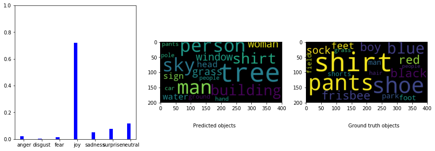

From Images to Emotions and Emotions to Images: Toward Emotion-Driven Scenes
Using CNNs to predict emotion from an image and its scene graph, and reversing this to predict the elements of an image's content from an emotion distribution.
Using CNNs to predict emotion from an image and its scene graph, and reversing this to predict the elements of an image's content from an emotion distribution.
We were initially inspired by image synthesis models, such as GauGAN, which can generate a realistic image based on a segmentation map. We were interested in extending such models to synthesize images, including predicting scene components and composition, based on an input emotion.
Towards this end, we focused on predicting scene elements given an emotion distribution. Because there are no existing image datasets containing both emotion and scene graph labels, we first needed to create our own. We synthesized the following two datasets:
Input emotion distribution along with word clouds of objects from the ground truth scene graph, and objects predicted by a model trained on synthesized dataset B. This emotion distribution heavily weights “disgust.”
A second example of input emotion distribution with word clouds of ground truth and predicted objects. This emotion distribution heavily weights “joy.”
Our project consisted of the following steps to synthesize datasets and train a model to predict scene elements from emotion:

A comparison between the true emotion distribution and the distributions predicted by the ResNet-based and VGG-based models for a variety of test set images.

A comparison between the ground truth and predicted emotion stimuli maps (ESMs). The differences between the ground truth and predicted maps are displayed with red indicating regions with larger magnitude of difference. Model versions that convert the input image to 32x32 and 64x64 are compared.
We successfully explored an initial approach towards translating emotional intent to scene component creation. We generated two synthetic datasets, used them to train a model that generates plausible predictions of objects based on emotion distribution. Additionally, for the task of predicting emotion distribution from an image, we used CNN-based approaches and built a supplementary model that predicted emotion stimuli maps for images; our best-performing model exceeded the performance of prior published work.
Download the paperThis was my final project for Convolutional Neural Networks for Visual Recognition (CS231N), which I took during spring 2019 at Stanford University. The course focused on computer vision techniques, particularly CNN’s.
The project was done in partnership with two other students in the course. My primary contributions included: implementing emotion classification SVM baseline; finding and running scene graph generation and object detection models on Emotion6 dataset; implementing baseline and neural network models for object detection prediction from emotion distribution on both synthesized datasets; experimenting with various metrics and normalization types.
May - June 2019